- Open the app.
- Enter your username or mobile number, then your password.
- Tap Sign in.
Leave Remember me on if this is your phone.

SFC Community Groups. You see every group. Leaders file the fellowship, follow-up, and next-fellowship reports. You can still correct the latest report, and you can change or cancel an upcoming plan.
Leave Remember me on if this is your phone.
Home shows how many groups there are, how many reports were filed this month, and how many fellowships are planned. Tap a number to open that list.
CG Status is every group. A group with a plan shows the next date in green. Tap a group to open it. The icon at the right switches between cards and a list.
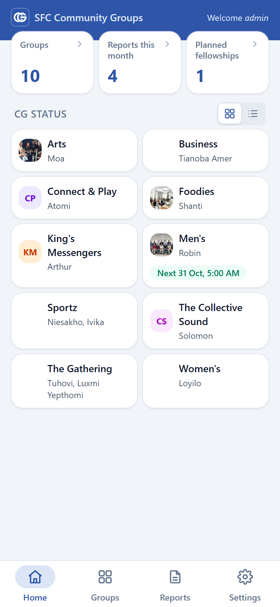
The Groups tab lists every community group, with its leader and assistant leaders. Tap a group to open it. Add group is at the bottom.
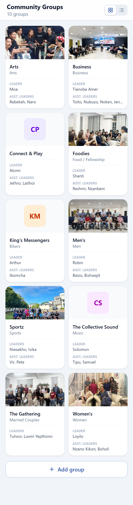
A group page shows the photo, how often it meets, its leaders, the next fellowship, and the latest reports.
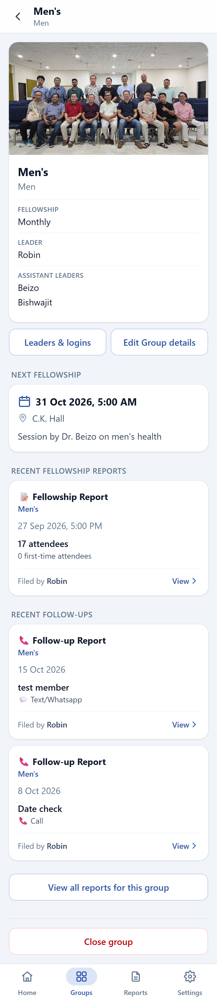
From Groups, tap Add group.
Leaders are added afterwards, from Leaders & logins.
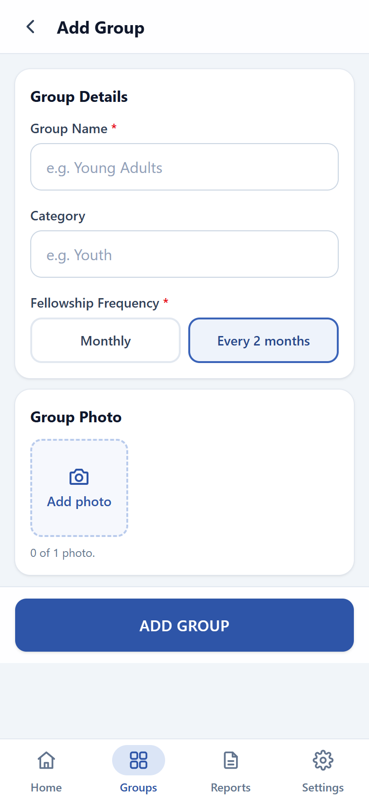
From the group, tap Edit Group details. Change the name, category, or photo, and tap Monthly or Every 2 months.
Tap Save changes. Leaders can edit the name, category, and photo. Only an Admin can change how often the group meets.
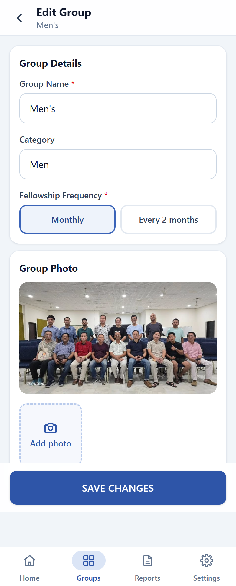
Closing hides a group from Home and the Groups list. Its past reports stay and can still be opened.
When any group is closed, the Groups list can show them again.
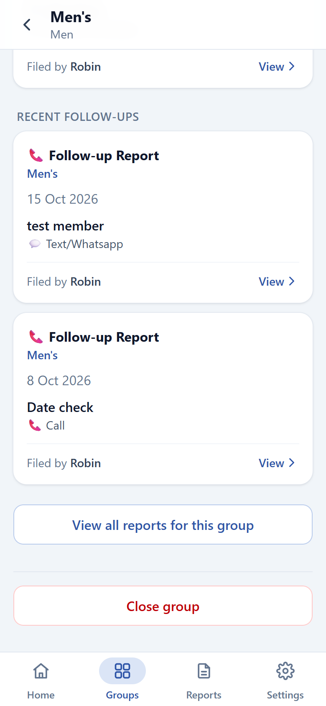
From a group, tap Leaders & logins. Each person is a Leader or an Asst. Leader. Someone with no login yet cannot sign in.
To add someone, fill in Add a person: name, role, mobile number, and any details you have, then tap Add to group. You can set the password in the next step.
Phone numbers in these pictures are shortened.
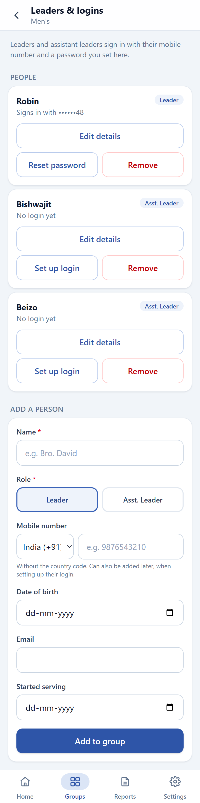
On the person’s card, tap Set up login or Reset password.
Reset password is the same screen when they already have a login and have forgotten it. Remove takes them off this group. Their past reports stay.
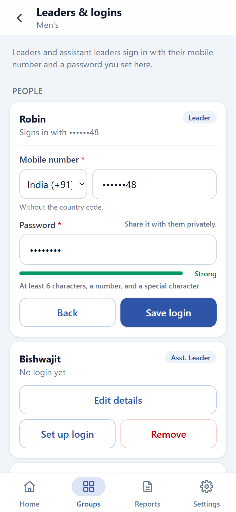
From Settings, tap Admins.
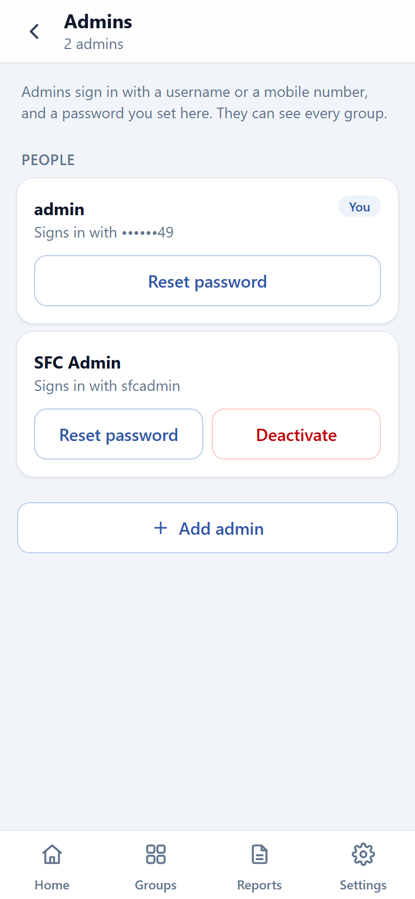
The Reports tab starts on All groups. The four cards are Fellowships, Follow-ups, Next Fellowship, and Expenditures.
Tap a card to open that list. At the top, the group list switches between All Groups and one group. Tap a row to open the report.
From a group’s page, View all reports for this group opens the same cards for that group only.
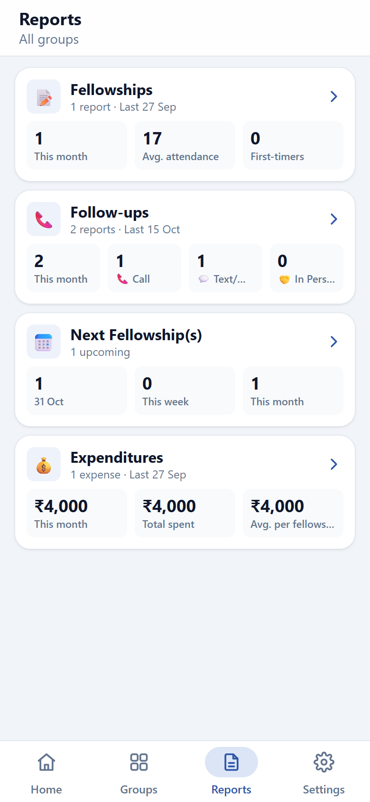
After you tap a card, choose All Groups or one group. The list updates straight away. This is the fellowships list.
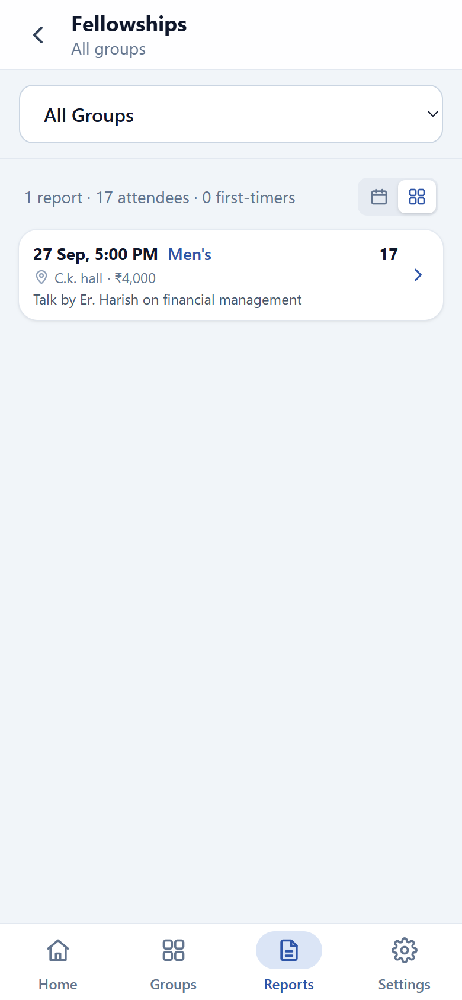
On that list, the calendar icon opens the month. The other icon returns to the list. The group list above still switches between All Groups and one group.
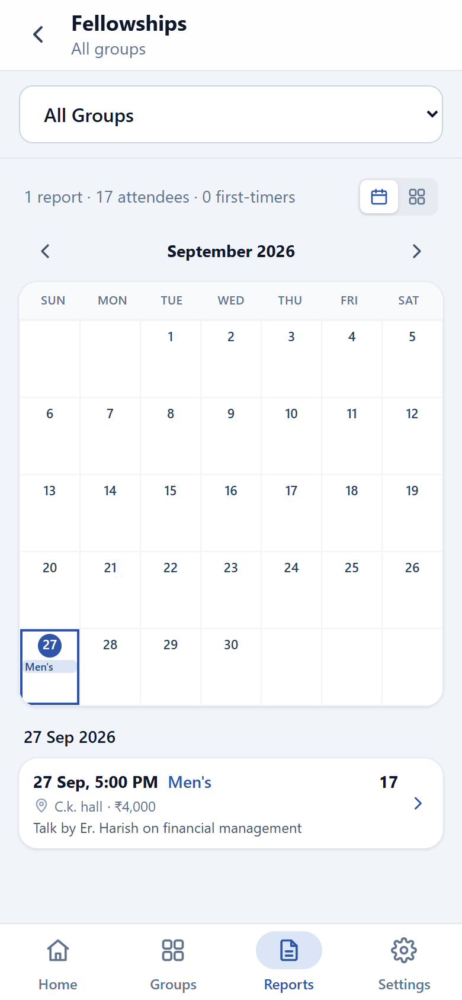
Install app, on Settings or the banner on Home, adds the app to your home screen. On an iPhone, use Share, then Add to Home Screen. On other phones, tap Install app, or use the browser menu. The banner and the row go away once the app is installed.
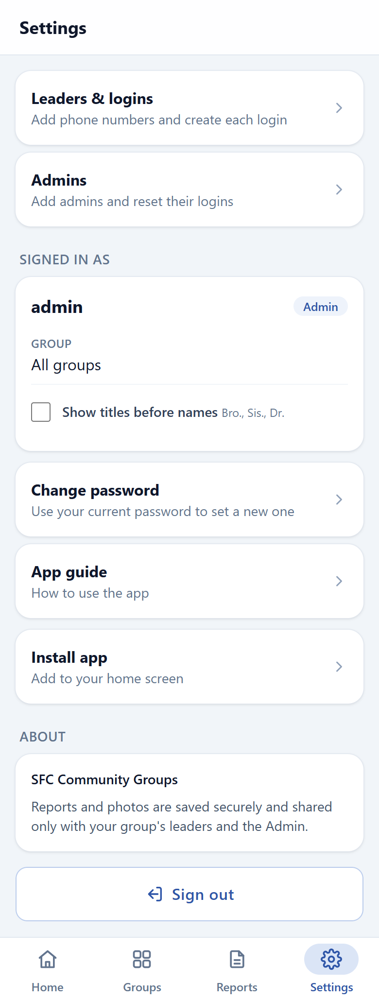